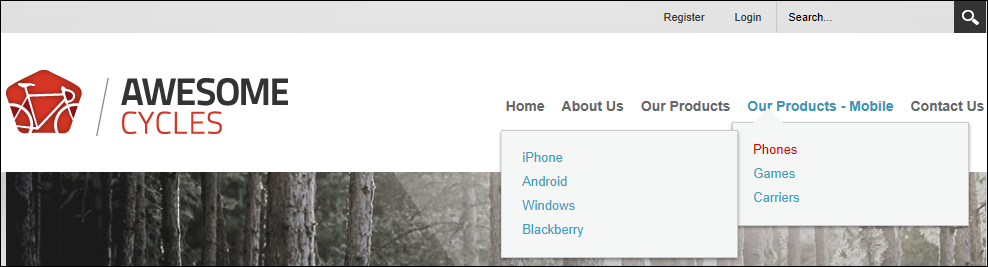
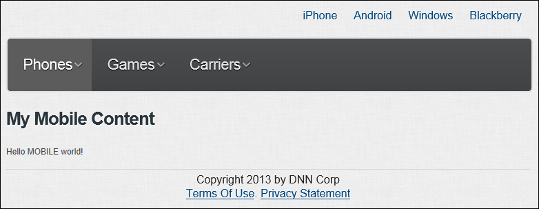

If you want to manage your mobile device web presence from a single site, you can create a MicroSite that forms part of your main site but is only visible to mobile device users. A MicroSite consists of a single parent page and multiple child pages that can be created and managed from your main site in the same way as you would normally create site pages.
Here's how to build a MicroSite:
In the below example, the parent page of the MicroSite is called "Products - Mobile"

Notice that when you select a child page of the MicroSite that the child page displays in the mobile skin menu.
